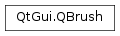
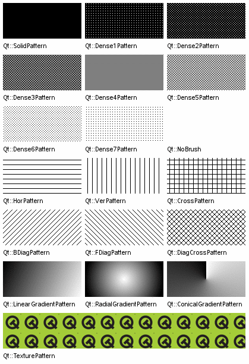

QBrush¶
Synopsis¶
Functions¶
- def
__eq__(b) - def
__ne__(b) - def
color() - def
gradient() - def
isOpaque() - def
matrix() - def
setColor(color) - def
setColor(color) - def
setMatrix(mat) - def
setStyle(arg__1) - def
setTexture(pixmap) - def
setTextureImage(image) - def
setTransform(arg__1) - def
style() - def
swap(other) - def
texture() - def
textureImage() - def
transform()
Detailed Description¶
The
PySide2.QtGui.QBrushclass defines the fill pattern of shapes drawn byPySide2.QtGui.QPainter.A brush has a style, a color, a gradient and a texture.
The brush
PySide2.QtGui.QBrush.style()defines the fill pattern using theQt.BrushStyleenum. The default brush style isQt.NoBrush(depending on how you construct a brush). This style tells the painter to not fill shapes. The standard style for filling isQt.SolidPattern. The style can be set when the brush is created using the appropriate constructor, and in addition thePySide2.QtGui.QBrush.setStyle()function provides means for altering the style once the brush is constructed.The brush
PySide2.QtGui.QBrush.color()defines the color of the fill pattern. The color can either be one of Qt’s predefined colors,Qt.GlobalColor, or any other customPySide2.QtGui.QColor. The currently set color can be retrieved and altered using thePySide2.QtGui.QBrush.color()andPySide2.QtGui.QBrush.setColor()functions, respectively.The
PySide2.QtGui.QBrush.gradient()defines the gradient fill used when the current style is eitherQt.LinearGradientPattern,Qt.RadialGradientPatternorQt.ConicalGradientPattern. Gradient brushes are created by giving aPySide2.QtGui.QGradientas a constructor argument when creating thePySide2.QtGui.QBrush. Qt provides three different gradients:PySide2.QtGui.QLinearGradient,PySide2.QtGui.QConicalGradient, andPySide2.QtGui.QRadialGradient- all of which inheritPySide2.QtGui.QGradient.gradient = QRadialGradient gradient(50, 50, 50, 50, 50) gradient.setColorAt(0, QColor.fromRgbF(0, 1, 0, 1)) gradient.setColorAt(1, QColor.fromRgbF(0, 0, 0, 0)) brush = QBrush(gradient)The
PySide2.QtGui.QBrush.texture()defines the pixmap used when the current style isQt.TexturePattern. You can create a brush with a texture by providing the pixmap when the brush is created or by usingPySide2.QtGui.QBrush.setTexture().Note that applying
PySide2.QtGui.QBrush.setTexture()makesPySide2.QtGui.QBrush.style()==Qt.TexturePattern, regardless of previous style settings. Also, callingPySide2.QtGui.QBrush.setColor()will not make a difference if the style is a gradient. The same is the case if the style isQt.TexturePatternstyle unless the current texture is aPySide2.QtGui.QBitmap.The
PySide2.QtGui.QBrush.isOpaque()function returnstrueif the brush is fully opaque otherwise false. A brush is considered opaque if:
- The alpha component of the
PySide2.QtGui.QBrush.color()is 255.- Its
PySide2.QtGui.QBrush.texture()does not have an alpha channel and is not aPySide2.QtGui.QBitmap.- The colors in the
PySide2.QtGui.QBrush.gradient()all have an alpha component that is 255.
To specify the style and color of lines and outlines, use the
PySide2.QtGui.QPainter‘spencombined withQt.PenStyleandQt.GlobalColor:painter = QPainter(self) painter.setBrush(Qt.cyan) painter.setPen(Qt.darkCyan) painter.drawRect(0, 0, 100,100) painter.setBrush(Qt.NoBrush) painter.setPen(Qt.darkGreen) painter.drawRect(40, 40, 100, 100)Note that, by default,
PySide2.QtGui.QPainterrenders the outline (using the currently set pen) when drawing shapes. Usepainter.setPen(Qt::NoPen):attr:` <Qt.PenStyle>` to disable this behavior.For more information about painting in general, see the Paint System .
See also
Qt.BrushStylePySide2.QtGui.QPainterPySide2.QtGui.QColor

-
class
PySide2.QtGui.QBrush¶ -
class
PySide2.QtGui.QBrush(bs) -
class
PySide2.QtGui.QBrush(color[, bs=Qt.SolidPattern]) -
class
PySide2.QtGui.QBrush(color, pixmap) -
class
PySide2.QtGui.QBrush(brush) -
class
PySide2.QtGui.QBrush(color[, bs=Qt.SolidPattern]) -
class
PySide2.QtGui.QBrush(color, pixmap) -
class
PySide2.QtGui.QBrush(gradient) -
class
PySide2.QtGui.QBrush(image) -
class
PySide2.QtGui.QBrush(pixmap) Parameters: - pixmap –
PySide2.QtGui.QPixmap - bs –
PySide2.QtCore.Qt.BrushStyle - brush –
PySide2.QtGui.QBrush - color –
PySide2.QtCore.Qt.GlobalColor - gradient –
PySide2.QtGui.QGradient - image –
PySide2.QtGui.QImage
Constructs a default black brush with the style
Qt.NoBrush(i.e. this brush will not fill shapes).Constructs a black brush with the given
style.See also
Constructs a brush with the given
colorandstyle.Constructs a brush with the given
colorand the custom pattern stored inpixmap.The style is set to
Qt.TexturePattern. The color will only have an effect for QBitmaps.Constructs a copy of
other.Constructs a brush with the given
colorandstyle.Constructs a brush with the given
colorand the custom pattern stored inpixmap.The style is set to
Qt.TexturePattern. The color will only have an effect for QBitmaps.Constructs a brush based on the given
gradient.The brush style is set to the corresponding gradient style (either
Qt.LinearGradientPattern,Qt.RadialGradientPatternorQt.ConicalGradientPattern).Constructs a brush with a black color and a texture set to the given
image. The style is set toQt.TexturePattern.Constructs a brush with a black color and a texture set to the given
pixmap. The style is set toQt.TexturePattern.See also
- pixmap –
-
PySide2.QtGui.QBrush.color()¶ Return type: PySide2.QtGui.QColorReturns the brush color.
See also
-
PySide2.QtGui.QBrush.gradient()¶ Return type: PySide2.QtGui.QGradientReturns the gradient describing this brush.
-
PySide2.QtGui.QBrush.isOpaque()¶ Return type: PySide2.QtCore.boolReturns
trueif the brush is fully opaque otherwise false. A brush is considered opaque if:- The alpha component of the
PySide2.QtGui.QBrush.color()is 255. - Its
PySide2.QtGui.QBrush.texture()does not have an alpha channel and is not aPySide2.QtGui.QBitmap. - The colors in the
PySide2.QtGui.QBrush.gradient()all have an alpha component that is 255. - It is an extended radial gradient.
- The alpha component of the
-
PySide2.QtGui.QBrush.matrix()¶ Return type: PySide2.QtGui.QMatrixReturns the current transformation matrix for the brush.
See also
-
PySide2.QtGui.QBrush.__ne__(b)¶ Parameters: b – PySide2.QtGui.QBrushReturn type: PySide2.QtCore.boolReturns
trueif the brush is different from the givenbrush; otherwise returnsfalse.Two brushes are different if they have different styles, colors or transforms or different pixmaps or gradients depending on the style.
See also
PySide2.QtGui.QBrush.operator==()
-
PySide2.QtGui.QBrush.__eq__(b)¶ Parameters: b – PySide2.QtGui.QBrushReturn type: PySide2.QtCore.boolReturns
trueif the brush is equal to the givenbrush; otherwise returnsfalse.Two brushes are equal if they have equal styles, colors and transforms and equal pixmaps or gradients depending on the style.
See also
PySide2.QtGui.QBrush.operator!=()
-
PySide2.QtGui.QBrush.setColor(color)¶ Parameters: color – PySide2.QtGui.QColorSets the brush color to the given
color.Note that calling will not make a difference if the style is a gradient. The same is the case if the style is
Qt.TexturePatternstyle unless the current texture is aPySide2.QtGui.QBitmap.See also
-
PySide2.QtGui.QBrush.setColor(color) Parameters: color – PySide2.QtCore.Qt.GlobalColorThis is an overloaded function.
Sets the brush color to the given
color.
-
PySide2.QtGui.QBrush.setMatrix(mat)¶ Parameters: mat – PySide2.QtGui.QMatrixSets
matrixas an explicit transformation matrix on the current brush. The brush transformation matrix is merged withPySide2.QtGui.QPaintertransformation matrix to produce the final result.See also
-
PySide2.QtGui.QBrush.setStyle(arg__1)¶ Parameters: arg__1 – PySide2.QtCore.Qt.BrushStyleSets the brush style to
style.See also
-
PySide2.QtGui.QBrush.setTexture(pixmap)¶ Parameters: pixmap – PySide2.QtGui.QPixmapSets the brush pixmap to
pixmap. The style is set toQt.TexturePattern.The current brush color will only have an effect for monochrome pixmaps, i.e. for
QPixmap.depth()== 1 (QBitmaps).See also
-
PySide2.QtGui.QBrush.setTextureImage(image)¶ Parameters: image – PySide2.QtGui.QImageSets the brush image to
image. The style is set toQt.TexturePattern.Note the current brush color will not have any affect on monochrome images, as opposed to calling
PySide2.QtGui.QBrush.setTexture()with aPySide2.QtGui.QBitmap. If you want to change the color of monochrome image brushes, either convert the image toPySide2.QtGui.QBitmapwithQBitmap::fromImage()and set the resultingPySide2.QtGui.QBitmapas a texture, or change the entries in the color table for the image.
-
PySide2.QtGui.QBrush.setTransform(arg__1)¶ Parameters: arg__1 – PySide2.QtGui.QTransformSets
matrixas an explicit transformation matrix on the current brush. The brush transformation matrix is merged withPySide2.QtGui.QPaintertransformation matrix to produce the final result.See also
-
PySide2.QtGui.QBrush.style()¶ Return type: PySide2.QtCore.Qt.BrushStyleReturns the brush style.
See also
-
PySide2.QtGui.QBrush.swap(other)¶ Parameters: other – PySide2.QtGui.QBrushSwaps brush
otherwith this brush. This operation is very fast and never fails.
-
PySide2.QtGui.QBrush.texture()¶ Return type: PySide2.QtGui.QPixmapReturns the custom brush pattern, or a null pixmap if no custom brush pattern has been set.
See also
-
PySide2.QtGui.QBrush.textureImage()¶ Return type: PySide2.QtGui.QImageReturns the custom brush pattern, or a null image if no custom brush pattern has been set.
If the texture was set as a
PySide2.QtGui.QPixmapit will be converted to aPySide2.QtGui.QImage.
-
PySide2.QtGui.QBrush.transform()¶ Return type: PySide2.QtGui.QTransformReturns the current transformation matrix for the brush.
See also
© 2018 The Qt Company Ltd. Documentation contributions included herein are the copyrights of their respective owners. The documentation provided herein is licensed under the terms of the GNU Free Documentation License version 1.3 as published by the Free Software Foundation. Qt and respective logos are trademarks of The Qt Company Ltd. in Finland and/or other countries worldwide. All other trademarks are property of their respective owners.